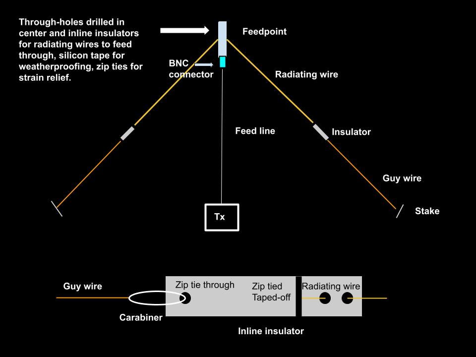

I finished putting together my homebrew 30m inverted-vee dipole a few days ago, so I drove up to an open spot in the orchard to test it. As always, the most frustrating and time consuming part was getting all the wires untangled! With good prior calculations and having practiced my knots, I was able to get it deployed with tight radiating elements at a great angle. The SWR was 1.2:1, so I did not need to make any adjustments.

With the center feed-point about 30ft up in a cherry tree, I ran the feed line to my car and fired up the QMX. I tuned to 10.116 Mhz and called CQ, just hoping to get picked up by the Reverse Beacon Network. To my pleasant surprise, Mike WG9P responded and we had a nice, brief ragchew!
Mike's signal from the Chicagoland area was strong and clear, and I managed to copy enough of his code to exchange information. I'm grateful to WG9P for slowing down his sending speed for me. He's a prolific operator with loads of time on the bands sending CW. It was an honor to work him.
This was my first time on 30m. It's much quieter than 40m, with very little noise (QRN). Of course, I was several hundred feet away from any interference (RFI) in the orchard. It really made me look forward to my first POTA activation coming up, which will be in a quiet environment too.